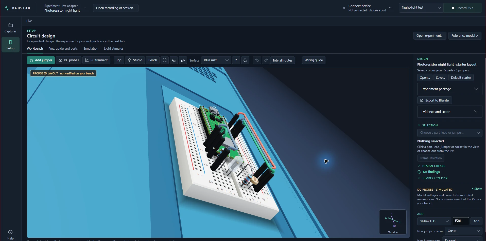
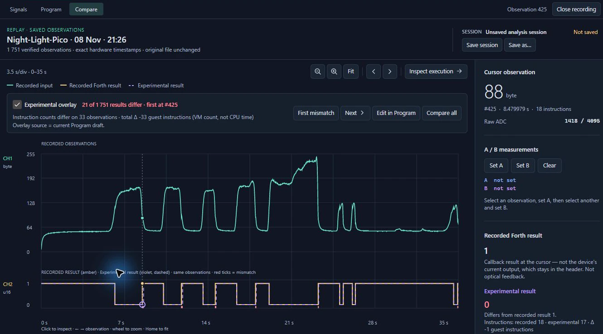

Start here
Your first replay
Change one threshold and find the first decision that differs from the recording.
Kajo Lab Research preview
What changes when you give a small computer the same inputs and a different rule? Kajo Lab lets you open a real recording, change one decision, and see where the two runs first disagree.
The exercise runs in this browser. No board or installation needed.
Observation 425Sensor reading
88Lay out a circuit in the Workbench. Then inspect a captured reading and compare what two versions of the program did with it.


Start here
Change one threshold and find the first decision that differs from the recording.
Continue the series
Follow a Pico measurement into Forth and see how the program arrives at an LED command.
Foundations
Follow the same doubling rule through two software machines, then see what the Pico’s kernel does.
Forth
Define double and step through the two operations that turn 7 into 14.
Forth VM
Follow a word call and see which stack holds the numbers and which holds the return address.